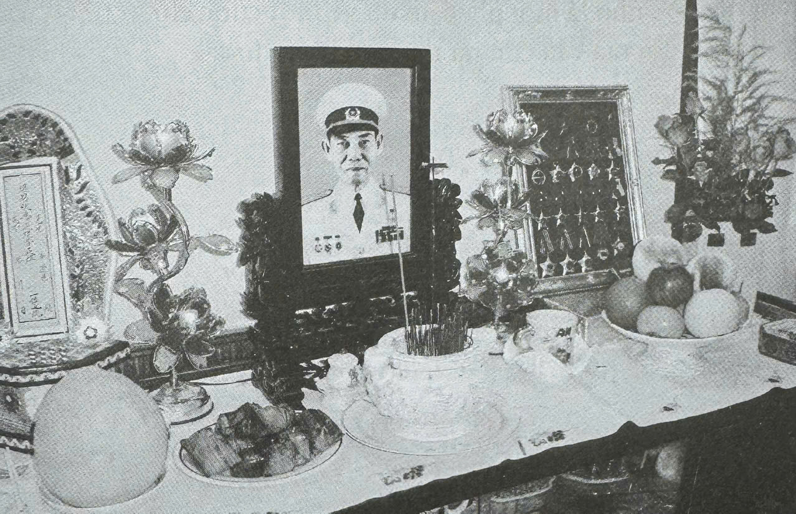

Chuyển trang
DANH MỤC TRANG
📖
1. Lý do chọn đề tài
Đang xem
⏳
2. Bối cảnh lịch sử
Đang xem
👤
3. Tiểu sử (Trước 1957)
Đang xem
⏱️
4. Dòng thời gian (1957–1976)
Đang xem
🕊️
5. Phòng lưu niệm Phạm Xuân Ẩn
Đang xem
VI
/
日本語
HỒ SƠ SỐ 01 · PHẦN CUỐI
Phòng lưu niệm Phạm Xuân Ẩn
ANH HÙNG LỰC LƯỢNG VŨ TRANG NHÂN DÂN

[Sự ghi nhận đối với
những cống hiến của PXA]
';">
SỰ GHI NHẬN ĐỐI VỚI NHỮNG CỐNG HIẾN CỦA PHẠM XUÂN ẨN
[Chân dung Thiếu tướng
Phạm Xuân Ẩn]
';">
Thiếu tướng Phạm Xuân Ẩn
(1927 – 2006)
NHỮNG CHI TIẾT KHÁC
MỞ TỦ LƯU NIỆM
Chạm để mở cánh cửa lịch sử ✦
✕